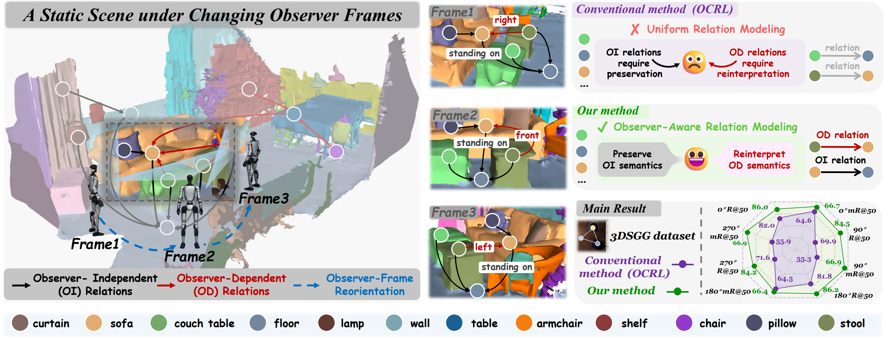
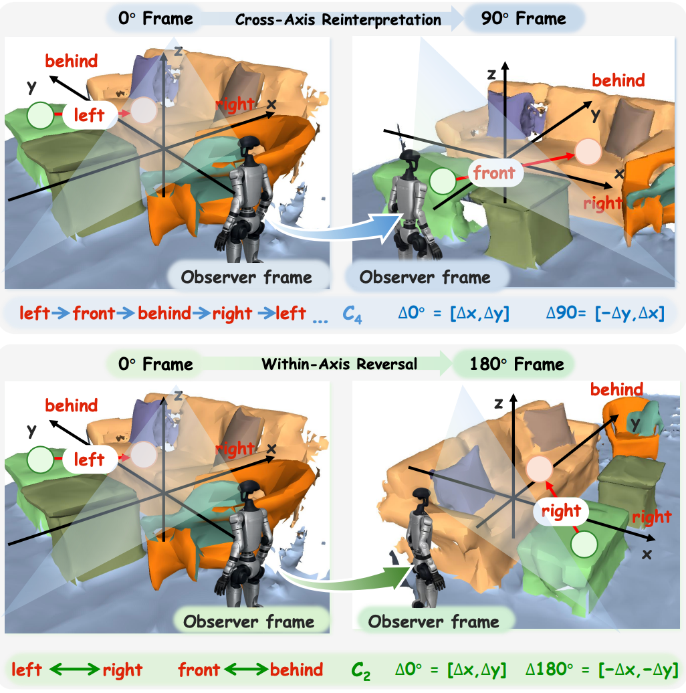
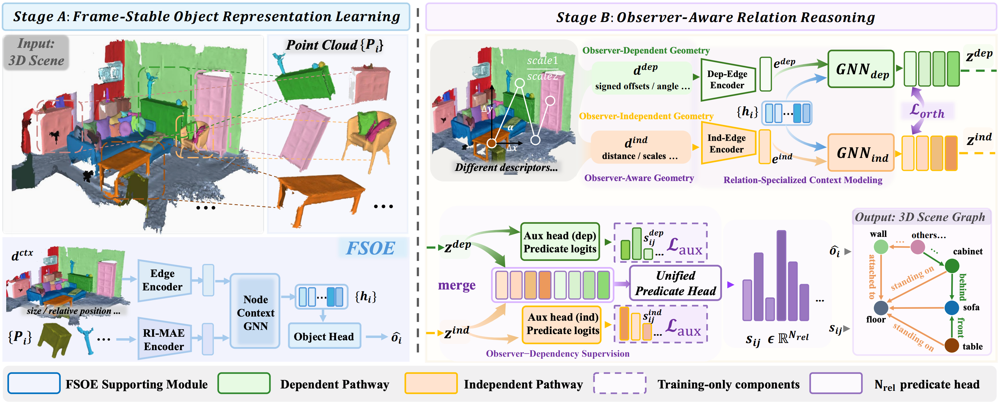
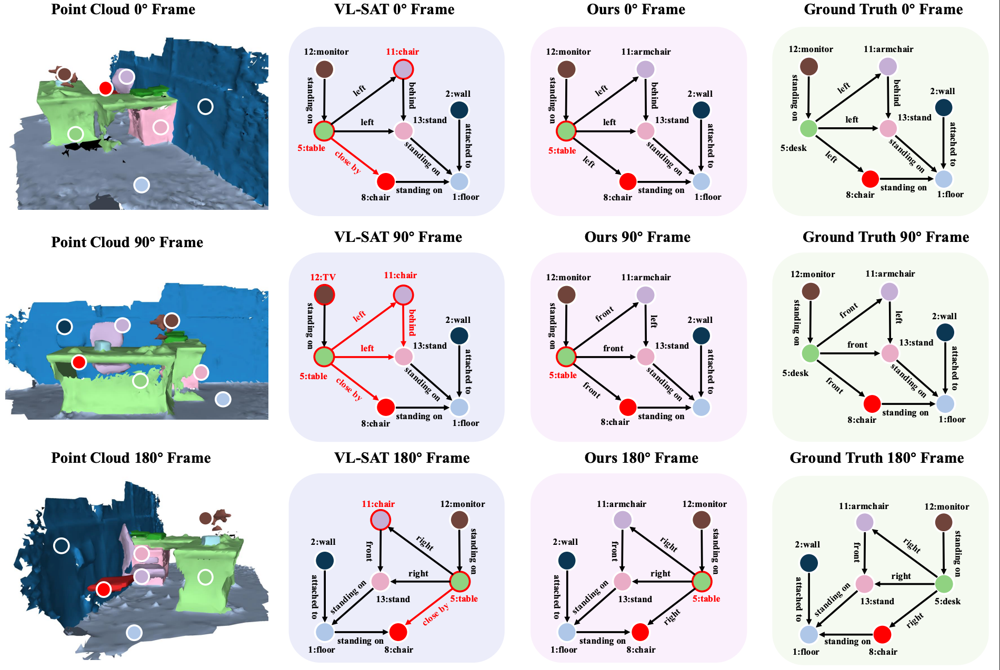

Preserve semantics
Contact, support, and semantic relations such as standing on and attached to should remain unchanged when the local observer frame is reoriented.

A physical scene remains unchanged while its local observer frame is reoriented. Observer-Independent (OI) relations preserve their semantics, whereas Observer-Dependent (OD) directional relations must be reinterpreted relative to the current observer frame.
Overview
3D Scene Graph Generation (3DSGG) represents 3D scenes as structured object-relation-object graphs for spatial understanding. In observer-centric spatial perception, the same physical scene may be expressed under different local observer frames while its underlying structure remains unchanged. However, existing models are typically developed under a fixed scene-aligned reference frame and may produce semantically inconsistent predictions when the same scene is re-expressed in a different observer frame. We attribute this failure to the heterogeneous frame dependency of relational predicates. Directional predicates such as left, front, right, and behind are Observer-Dependent Relations, whereas most contact, support, and semantic predicates, such as standing on and attached to, are approximately Observer-Independent Relations. Conventional models do not distinguish these frame responses, leading to degraded relation prediction under observer-frame reorientation. To address this issue, we introduce Observer-Aware Relations (OAR), which combines observer-aware geometric encoding and relation specialization, supported by frame-stable object encoding, for unified multi-label predicate prediction. Experiments on 3DSSG show that OAR consistently outperforms baselines across controlled observer-frame reorientations without training-time frame-reorientation augmentation, while remaining competitive on the standard benchmark.
Core distinction
OAR explicitly separates semantic preservation from frame-relative reinterpretation.
Contact, support, and semantic relations such as standing on and attached to should remain unchanged when the local observer frame is reoriented.
Directional relations such as left, front, right, and behind follow a deterministic label permutation under cardinal observer-frame reorientation.

A 180° reorientation performs a within-axis reversal: left ↔ right and front ↔ behind.
In contrast, 90° and 270° reorientations exchange the horizontal axes and therefore require cross-axis reinterpretation.
This diagnostic hierarchy explains why conventional shared relation encoders can remain stable at 180° yet degrade sharply at 90° and 270°.
OAR models these heterogeneous frame responses directly rather than relying on output correction or fourfold rotation augmentation.
Architecture
Frame-stable object representations support specialized OI and OD relation reasoning, followed by unified multi-label predicate prediction.

A pretrained RI-MAE encoder extracts rotation-stable object features. A node-context GNN then produces scene-aware object representations.
The OD descriptor retains signed offsets and angular cues, while the OI descriptor suppresses signed horizontal orientation and emphasizes distances, scales, and structural statistics.
Two relation GNNs specialize OI and OD cues. Auxiliary pathway heads and an orthogonality regularizer encourage complementary representations.
The specialized pathway features are merged only before the final classifier, preserving the original 26-class multi-label predicate space.
Evaluation
OAR is trained without frame-reorientation augmentation and evaluated under controlled 0°, 90°, 180°, and 270° observer frames.
Main takeaway
At the challenging cross-axis reorientation, OAR reaches 84.5 Overall R@50, outperforming the strongest frame-augmented baseline by 8.5 points.
Overall R@50
86.0 → 84.5
OD mR@50
87.9 → 86.8
OI mR@50
62.8 → 63.3
| Method | 0° Overall R@50 | 90° Overall R@50 | Δ90° | 90° OD mR@50 | 90° OI mR@50 |
|---|---|---|---|---|---|
| VL-SAT | 79.9 | 68.2 | −11.7 | 67.8 | 51.1 |
| VL-SAT + RI-MAE | 81.9 | 71.0 | −10.9 | 70.3 | 54.7 |
| OCRL | 82.0 | 69.9 | −12.1 | 67.4 | 53.1 |
| OCRL (aug) | 76.8 | 76.0 | −0.8 | 78.0 | 57.7 |
| OAR (Ours) | 86.0 | 84.5 | −1.5 | 86.8 | 63.3 |
| Method | SGCls R@20/50/100 | SGCls mR@20/50/100 | PredCls R@20/50/100 | PredCls mR@20/50/100 |
|---|---|---|---|---|
| VL-SAT | 32.0 / 33.5 / 33.7 | 31.0 / 32.6 / 32.7 | 67.8 / 79.9 / 80.8 | 57.8 / 64.2 / 64.3 |
| OCRL | 36.1 / 37.7 / 37.8 | 29.8 / 32.0 / 32.1 | 70.2 / 82.0 / 82.6 | 57.1 / 64.6 / 64.8 |
| OAR (Ours) | 36.4 / 38.1 / 38.3 | 32.0 / 34.6 / 34.7 | 73.1 / 86.0 / 86.4 | 58.8 / 66.7 / 67.1 |

VL-SAT becomes inconsistent under the 90° cross-axis reorientation. OAR better follows the expected OD predicate re-indexing while preserving OI relations such as standing on and attached to.
| Configuration | Triplet R@50 | Triplet mR@50 | SGCls R@50 | SGCls mR@50 | PredCls R@50 | PredCls mR@50 | 90° R@50 | 90° mR@50 |
|---|---|---|---|---|---|---|---|---|
| Baseline | 89.83 | 60.37 | 31.5 | 23.6 | 79.2 | 57.8 | 59.8 | 46.4 |
| + FSOE | 90.37 | 62.59 | 36.7 | 32.1 | 83.6 | 63.6 | 68.4 | 51.5 |
| + FSOE + Spec. | 90.95 | 67.39 | 37.3 | 33.8 | 85.0 | 64.3 | 83.3 | 62.7 |
| + Spec. + OAGE | 89.64 | 62.41 | 33.2 | 28.6 | 80.8 | 62.6 | 78.4 | 61.2 |
| + FSOE + Spec. + OAGE (Ours) | 91.03 | 69.85 | 38.1 | 34.6 | 86.0 | 66.7 | 84.5 | 66.9 |
Citation
@misc{oar3dsgg2026,
title = {From Scene-Centric to Observer-Centric:
Modeling Observer-Aware Relations for 3D Scene Graph Generation},
author = {Jingjun Sun and Chaowei Wang and Zhirui Liu and Jiaxu Tian and Ming Yang and Yaoxing Wang and Shan Gao},
year = {2026}
}